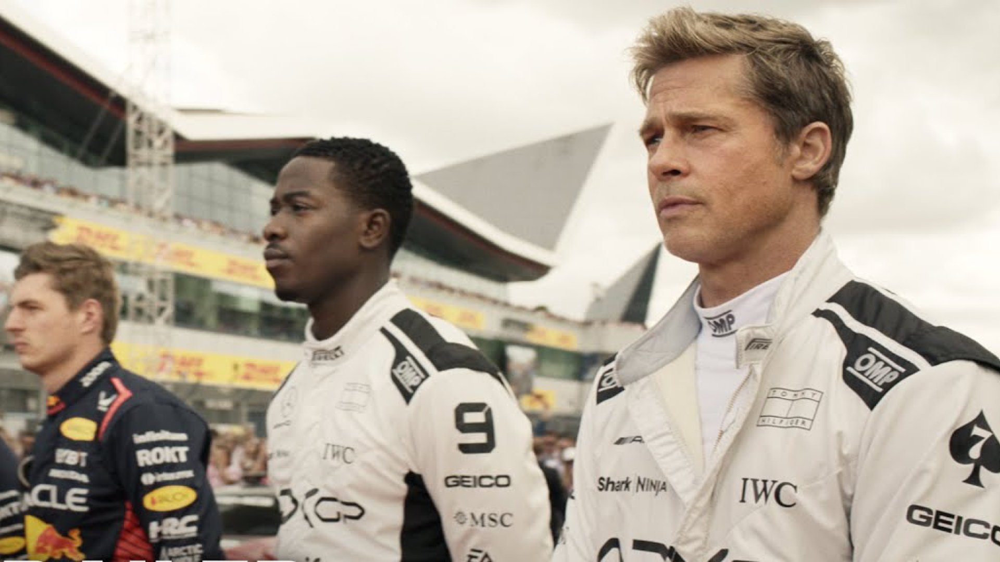
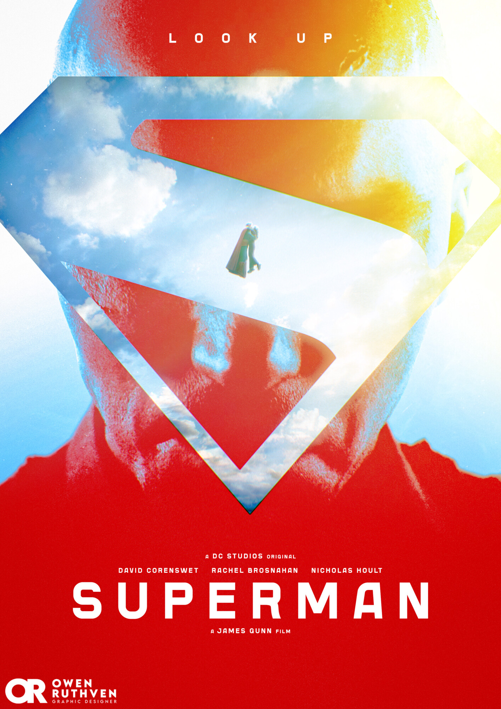

"Ils nous ont envoyés un message, disant qu'ils peuvent prendre tous ce qu'ils convoitent,
nous allons leur répondre… que ce monde… est notre terre a nous."
- Jake Sully
Articles de cette semaine
À regarder plus tard...
| 1 |  | Critique sur l'univers palpitant de la Formule 1, entre vitesse, adrénaline et rivalités légendaires. Publié le 2 octobre |
|---|---|---|
| 2 | Un voyage magique où l'amitié entre humains et dragons dépasse toutes les frontières. Publié le 1 octobre |
|
| 3 |  | L'homme d'acier face à de nouveaux défis, entre justice et sacrifice. Publié le 30 septembre |
Avatar
Le film Avatar, réalisé par James Cameron, est une œuvre cinématographique qui a marqué l'industrie du cinéma par son innovation technologique et son récit captivant. Sorti en 2009, le film se déroule sur la planète Pandora, où les humains exploitent les ressources naturelles au détriment des habitants autochtones, les Na'vi. Le protagoniste, Jake Sully, un ancien marine paraplégique, est envoyé sur Pandora pour infiltrer les Na'vi en utilisant un avatar, une version génétiquement modifiée de lui-même. Au fil de l'histoire, Jake développe une connexion profonde avec la culture et la nature de Pandora, remettant en question ses loyautés et son rôle dans le conflit entre les humains et les Na'vi. Le film aborde des thèmes tels que l'écologie, le colonialisme et la rédemption, tout en offrant des visuels époustouflants grâce à l'utilisation de la technologie 3D et des effets spéciaux avancés. Avatar a été acclamé pour son innovation technique et son message puissant, devenant l'un des films les plus rentables de tous les temps.
Informations
- Réalisateur: James Cameron
- Année: 2009
- Durée: 162 minutes
- Genre: Science-fiction, Aventure
- Casting: Sam Worthington, Zoe Saldana, Sigourney Weaver
- Note: 4.5/5
Critiques - Voyage critique au cœur d'Avatar
Avatar est un véritable chef-d'œuvre visuel qui repousse les frontières du cinéma moderne. James Cameron y déploie un univers d'une beauté saisissante, à la fois immersif et foisonnant de détails, où les effets spéciaux se mettent au service d'une narration ambitieuse. Derrière le spectacle grandiose, le film propose une réflexion profonde sur des enjeux universels : la préservation de l'environnement, la relation entre l'homme et la nature, ainsi que le respect des cultures autochtones trop souvent menacées.
Mais derrière la prouesse technique se dessine une narration ambitieuse qui aborde des thèmes d'une grande portée. Le film met en lumière la fragilité des écosystèmes face à l'exploitation humaine et propose une réflexion sur la préservation de la nature, rappelant les menaces bien réelles qui pèsent sur notre planète. Cameron souligne également l'importance du respect des cultures autochtones, souvent réduites au silence ou écrasées par des logiques de conquête et de profit. Ces thématiques universelles confèrent au récit une résonance contemporaine, transformant cette aventure de science-fiction en une parabole écologique et humaniste.
Les performances des acteurs renforcent l'impact de ce récit foisonnant. Sam Worthington, dans le rôle de Jake Sully, incarne avec justesse un personnage déchiré entre deux mondes, offrant une interprétation nuancée qui donne chair à cette odyssée. Zoe Saldaña, magistrale en Neytiri, impose à l'écran une intensité émotionnelle remarquable, rendant son personnage à la fois puissant et profondément attachant. Autour d'eux, le reste de la distribution contribue à la cohérence et à la force du film. Grâce à cette alchimie entre prouesse visuelle, intensité dramatique et engagement thématique, Avatar s'impose comme bien plus qu'un film à grand spectacle : une expérience cinématographique totale, à vivre absolument sur grand écran pour en saisir toute l'ampleur.